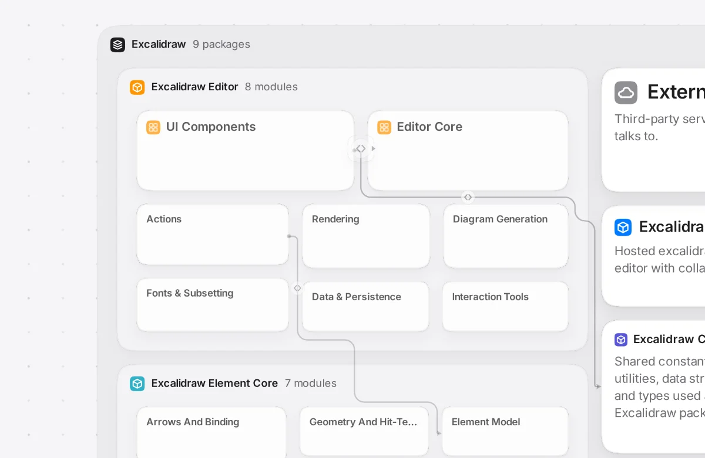
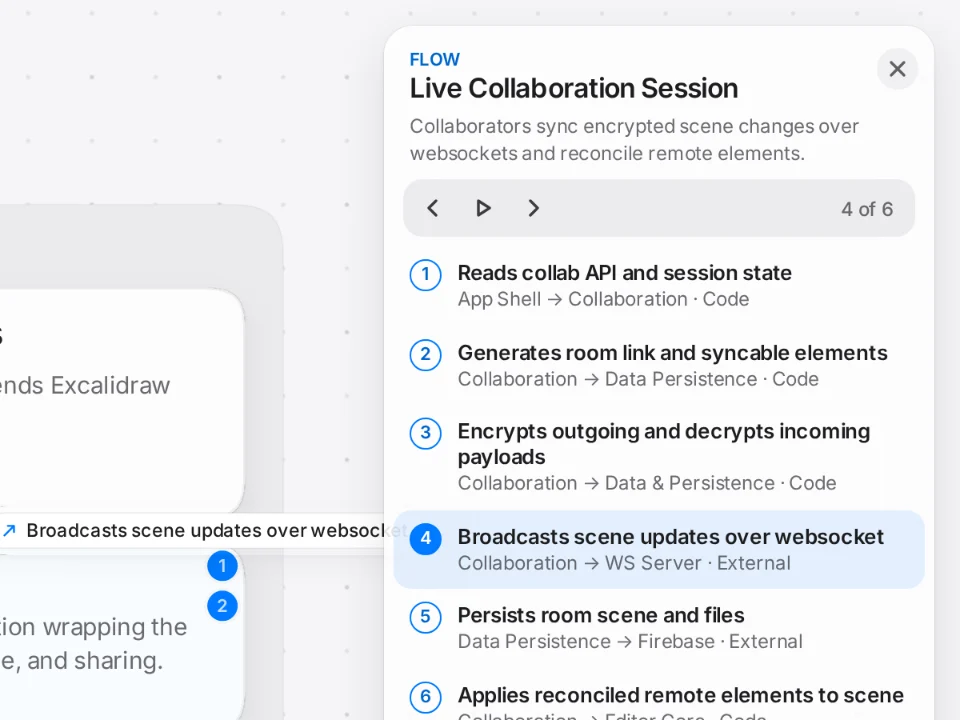
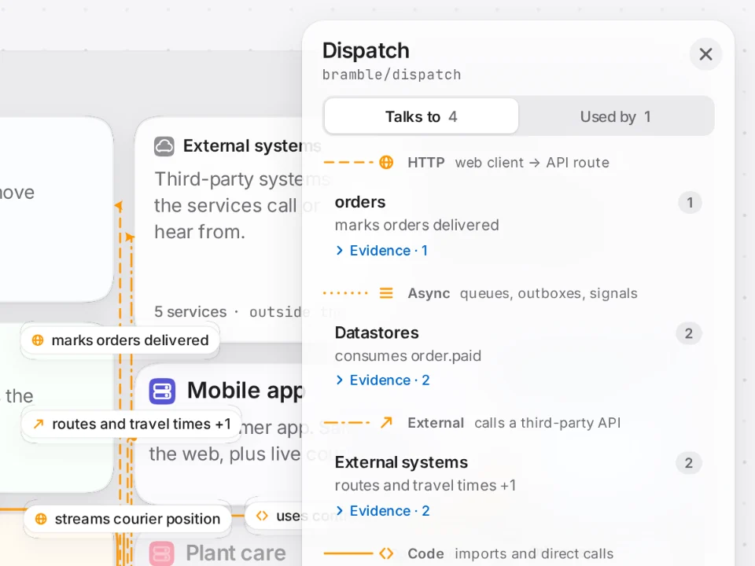

Semantic zoom
Cards open as you zoom in. The system shows its packages, packages show their modules, and modules show their files. Each level explains itself in plain sentences.


Zoomable architecture maps for codebases and multi‑repo systems.
One HTML file. Works offline. Written by your own model.
npx @arjanj/loupe
Run it at the top of any git repo. Node 18 or later.
Live demo
These are real Loupe maps, running right here. Pick one and explore.
The Excalidraw monorepo: packages, modules and files, with HTTP, code and external connections and guided flows.
Open full screen (opens in a new tab)A map of the open-source Excalidraw repository (MIT, commit 2c3dcc0), generated by Loupe. It contains no Excalidraw source files, only file paths and short quoted evidence lines, and is not affiliated with or endorsed by Excalidraw. See the third-party notices.
A made-up plant-delivery company drawn from one YAML manifest: services, queues, datastores and work still on a branch.
Open full screen (opens in a new tab)How it works
Static analysis finds packages, files, the import graph and concrete links: HTTP routes and their callers, queues, datastores and known SDKs. No model involved.
A model groups files into modules and writes the descriptions, edge labels and guided flows. Each flow step is checked against detected links.
Code goes only to your provider: Claude Code if installed, else your Anthropic or OpenAI key. Loupe has no server. Answers are cached, so reruns only ask about what changed.
The result is one self-contained HTML file that works offline. Every connection carries file:line evidence you can check.
Features
Cards open as you zoom in. The system shows its packages, packages show their modules, and modules show their files. Each level explains itself in plain sentences.

Guided flows walk through the main things a system does, step by step. Play them, or step through with the arrow keys.

Click a card to see what it talks to and what uses it, grouped by kind, with the source lines that prove each connection.

HTTP, async, data, external, webhook and code connections each get their own line style, so you can read a map at a glance.
Describe many repos in one system.yaml. Work that isn’t built yet is drawn ghosted, low-confidence facts are tagged Inferred, and a service can drill down into its own per-repo map.
system:
name: Bramble
services:
- id: dispatch
name: Dispatch
repo: bramble/dispatch
calls:
- { to: order-events, via: queue,
what: consumes order.paid }
- { to: twilio, via: sdk,
status: planned }Get started
One npx scans the code, writes the descriptions, finds the connections and flows, and renders your map.
Run it at the top of the repo. It writes architecture.html there and opens it in your browser.
npx @arjanj/loupeFrom a system manifest. Writes system.tree.json, then system.html. No model needed.
npx @arjanj/loupe manifest system.yamlnpx @arjanj/loupe render system.tree.jsonANTHROPIC_API_KEY, or OPENAI_API_KEYOptions, step-by-step commands and the manifest schema are in the README.